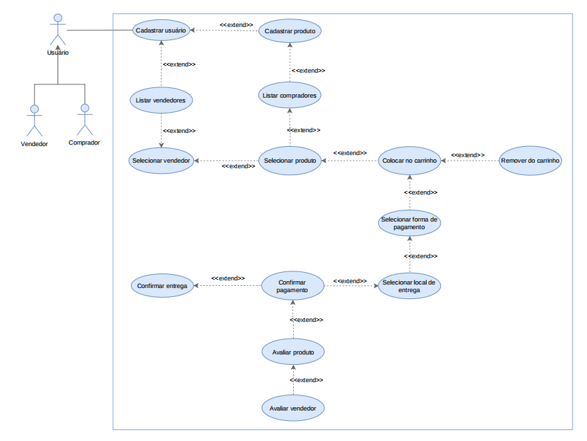

Equipe
Dayane Cristine
Eduardo Paiva
Felipe Braga
Gabriel Queiroz
Yasser Tuma

Descrição dos casos de uso:
Avaliar Produto - UC001
O ator deve ser capaz de avaliar o produto adquirido.
Ator:
Pré-condições:
-
O ator deve estar logado no sistema.
-
O ator deve ter adquirido algum produto.
Pós-condições
-
O produto deve estar avaliado no sistema.
Avaliar vendedor - UC002
O ator deve ser capaz de avaliar o atendimento com o vendedor.
Ator:
Pré-condições:
-
O ator deve estar logado no sistema.
-
O ator deve ter entrado em contato com o vendedor.
Pós-condições
-
O vendedor deve estar avaliado no sistema.
Cadastrar produto - UC003
O ator deve ser capaz de cadastrar novos produtos no sistema.
Ator:
Pré-condições:
-
● O ator deve estar logado no sistema.
-
● O ator estar na tela cadastrar produtos.
Pós-condições
-
● Os produtos devem estar cadastrados no sistema.
Cadastrar usuário - UC004
O ator deve ser capaz de cadastrar novos usuários no sistema.
Ator:
Pré-condições:
-
● O ator deve estar na página inicial do sistema.
-
● O ator deve ter permissão de cadastrar usuário.
Pós-condições
-
● O consumidor deve estar cadastrado no sistema.
-
● O vendedor deve estar cadastrado no sistema.